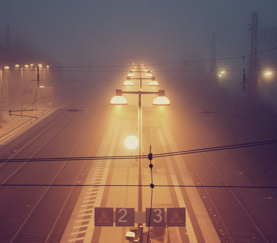
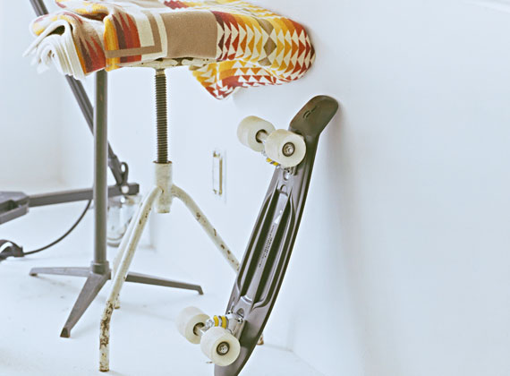

About Me
I am a technical photographer. I specialize in capturing images of complex machines, electronic components, and other technical subjects that require a high degree of precision and attention to detail.
With my background in both photography and engineering, I have developed a unique set of skills that allow me to capture images that not only look stunning but also accurately represent the technical details of the subject matter.
joybox

street light
music record
roof top
